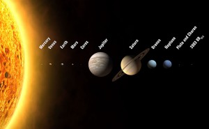

About Venus
Venus is the second planet from the Sun and the hottest in our solar system. It is often referred to as Earth's "sister planet" due to its similar size and composition.
Venus has a diameter of 12,104 km and an orbit period of 225 Earth days. Its surface temperature is about 462°C. Despite its similarities to Earth, Venus has a thick toxic atmosphere mainly composed of carbon dioxide, making it inhospitable to life as we know it.
Surface Features
The surface of Venus is rocky and mostly composed of plains, mountains, and valleys. There are also large impact craters and volcanic structures. One of the most prominent features is Maxwell Montes, the highest mountain on Venus.

Exploration
Several spacecraft have visited Venus, including the Soviet Venera probes and NASA's Magellan mission, which mapped the planet's surface. Currently, there are discussions and proposals for future missions to further explore this intriguing planet.
Additional Facts
- Venus rotates in the opposite direction to most other planets.
- It has no moons.
- A Venusian day is longer than its year due to its slow rotation.
- The atmosphere on Venus is extremely dense, exerting a pressure 92 times that of Earth's atmosphere at the surface.
- Its surface is covered in volcanic plains and large shield volcanoes.
- Venus's extreme temperatures are due to its runaway greenhouse effect.